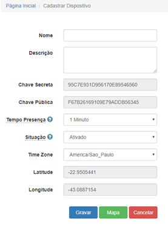
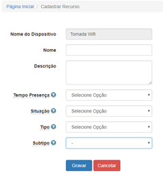
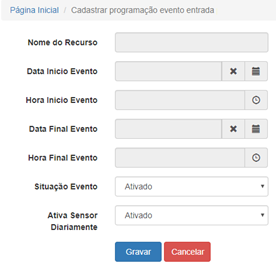
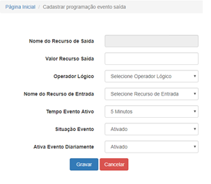
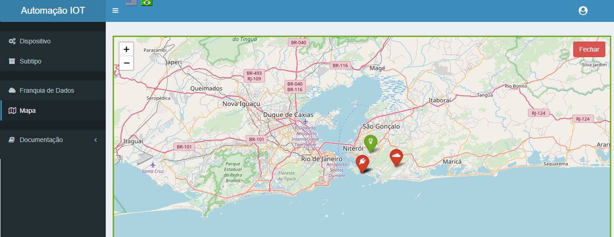

Funcionalidades¶
Criando Dispositivo e Recurso¶
Para podermos iniciar o processo de comunicação de disposto e recurso para com a base de dados IOT, teremos que cria-los antes em nosso site. Para isso basta acessarmos as opções de cadastrar dispositivo e cadastrar recurso.
Cadastrar Dispositivo
- Tempo Presença: Tempo em minutos (Lifetime) que demonstra o status do dispositivo, que poderá ser Conectado ou Desconectado.
- Time Zone: Que irá ajustar a data/hora conforme o GMT do dispositivo.
- Latitude e Longitude : São relativos as coordenadas onde encontra-se o dispositivo (que poderá ser visualizado através do Mapa). Inicialmente estes campos estarão preenchidos com as coordenadas do endereço cadastrado pelo usuário (opção Usuário Alterar cadastro), caso o endereço esteja vazio, as coordenadas serão preenchidas com as coordenadas do provedor de IP do usuário. Para alterarmos manualmente as coordenadas do dispositivo, deveremos clicar na opção Mapa, e posicionarmos o marcador na localização desejada.
Cadastrar Recurso
- Tempo Presença: Tempo em minutos (Lifetime) que demonstra o status do recurso, que poderá ser Conectado ou Desconectado.
- Tipo: Recurso de Entrada ou Saída.
- Subtipo: Subtipo para recurso do tipo Entrada ou Saída.
Programar Evento¶
Evento Ativo
Opção responsável por realizar a programação de eventos para os recursos do tipo Entrada (Ativo) e Saída (Passivo).
Recursos de entrada poderão ter a sua programação de ativar e desativar realizado através da seguinte opção (Evento Ativo):
Evento Passivo
Recursos de Saída poderão ter a sua programação de ativar e desativar um recurso qualquer de Entrada, de acordo com o valor de Saída associado ao Operador Lógico definido através da seguinte opção (Evento Passivo):
Mapa¶
Através da opção Mapa poderá ser visualizado todos os dispositivos cadastrados por conta individual.
No canto superior direito do Mapa temos a opção de filtragem de visualização dos dispositivos, poderá ser filtrado para ser apresentado dispositivos Ativados e/ou Desativados.
Ao abrir o mapa não será apresentado nenhum dispositivo, pois o filtro não estará selecionado.
Marcadores em Vermelho estará representando os dispositivos Desativados.
Marcadores em Verde estará representando os dispositivos Ativados.